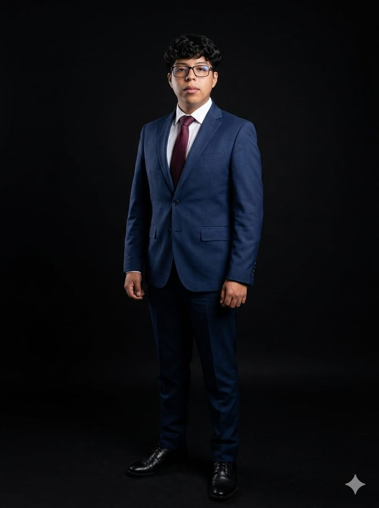

Sobre mí
¡Hola! Soy una persona apasionada por dos grandes mundos: el deporte y los videojuegos. Para mí, no hay nada como la adrenalina de un buen partido o la emoción de sumergirme en un juego desafiante.
En el deporte, disfruto mantenerme activo y superar mis propios límites. Ya sea jugando al fútbol con amigos, saliendo a correr o probando nuevas actividades, el deporte me enseña disciplina, trabajo en equipo y la importancia de la constancia.
Por otro lado, los videojuegos son mi espacio de creatividad y estrategia. Desde juegos de aventura hasta competitivos, me encanta explorar nuevos mundos, resolver desafíos y conectar con personas de todo el país a través del gaming.
Creo que ambas pasiones se complementan: el deporte me mantiene activo y enfocado, mientras que los videojuegos estimulan mi mente y creatividad. Si quieres charlar sobre tu deporte favorito o ese juego que no puedes soltar, ¡será un placer conectar contigo!
